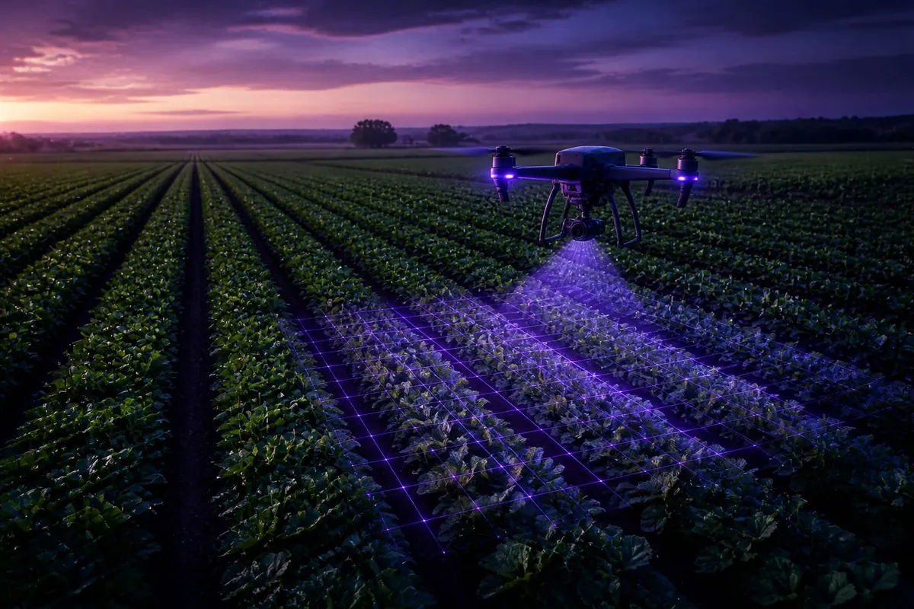

Crop Disease Detection
AI-powered identification of 20+ crop diseases from smartphone photos with treatment guidance.
Learn moreAI CROP HEALTH
BeejHealth is an AI crop health advisory for Indian agriculture.
AI-powered identification of 20+ crop diseases from smartphone photos with treatment guidance.
Learn moreDetects pest infestations and nutrient deficiencies with specific agronomy recommendations.
Learn moreWorks offline on Android and iOS — capture a photo, get structured results in seconds.
Learn moreTreatment recommendations and advisories in Hindi, Marathi, and English for Indian farmers.
Learn moreForecasting harvest timing and volume from crop imagery — scope to be confirmed with FrameIQ.
Discuss scopeTake photos of the crop with a smartphone.
Computer vision reviews the images for visible signs of disease, pests or nutrient issues.
The advisory can ask for more context about the crop and field.
A structured summary with suggested next steps.


BeejHealth is designed for crop monitoring in row crops, plantations, orchards, and vineyard environments.
Crop coverage depends on the farm, region, and issue type, so the FrameIQ team can scope the right advisory path with you.
Mobile-first advisory experiences typically combine image capture, crop context, and structured summary outputs.
Use cases can combine image analysis, agronomy rules, and interactive follow-up questions for field teams.
Answers to questions about BeejHealth.
BeejHealth is FrameIQ's AI crop health advisory focused on Indian agriculture. Farmers can photograph crops for disease, pest, and nutrient insights.
Crop coverage, availability, and rollout timelines are typically confirmed during the scoping conversation with the FrameIQ team.
Tell us about your crops, fields and goals and the FrameIQ team can review your enquiry.